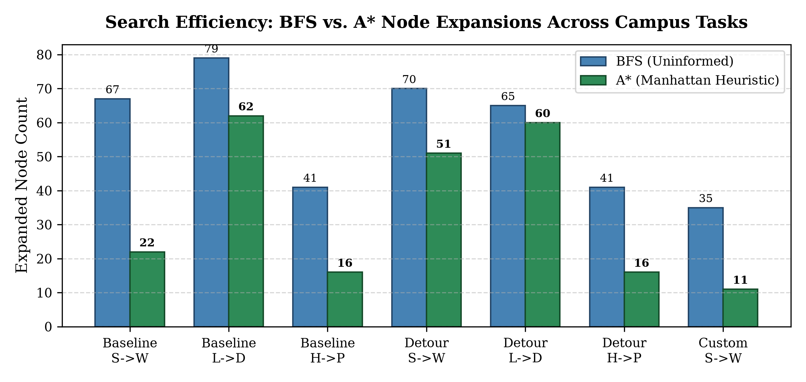
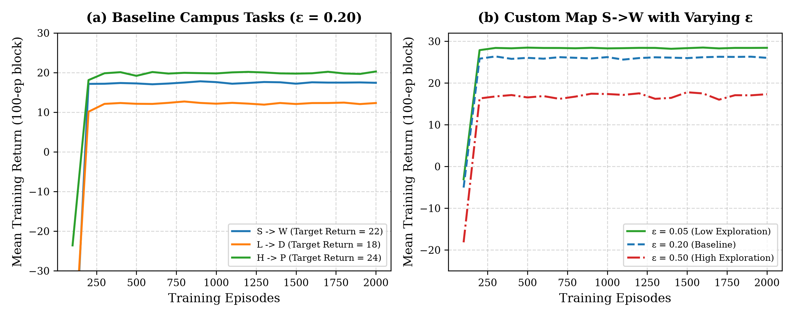

The Eagle Delivery project addresses autonomous robotic delivery across the Eastern Michigan University campus. The simulated robot must transport packages between designated building entrances across discrete 2D grid campus layouts with building obstacles and walkable corridors. We explore two complementary computational paradigms: classical search (BFS and informed A* with Manhattan heuristic) when map models are known, and reinforcement learning (model-free tabular Q-learning with ε-greedy exploration) when navigation policies must be learned purely from environmental trial and error.
We formulate the campus delivery task as a deterministic discrete state-space planning problem:
.) and building entrances (S, L, H, D, P, W). For an R × C map, S ⊂ {0, …, R-1} × {0, …, C-1} ∖ {s ∣ \text{grid}(s) = \text{'#'}}.S at (1, 1)).#). If blocked or out-of-bounds, the robot remains in place (s' = s).For A* graph search, the Manhattan distance heuristic (L1 norm) between current state s = (r_s, c_s) and goal g = (r_g, c_g) is:
Proof of Admissibility:
#) and map boundaries are removed, permitting unrestricted movement on the 4-connected 2D integer lattice ℤ2.
Since h(goal) = 0 and h(s) ≤ h*(s) for all s, the Manhattan distance heuristic is strictly admissible and consistent, guaranteeing that A* graph search finds an optimal path without re-expanding closed states. ▪
We implemented BFS and A* in agents.py. A* maintains a priority queue of 4-tuples (f, insertion_number, g, state), where f = g + h. An insertion counter breaks f-ties deterministically in FIFO order without comparing state coordinates. A best_g lookup table tracks the cheapest known cost to each state, lazily skipping stale queue entries whose stored g exceeds best_g[state]. Successors are expanded in the campus order: UP, DOWN, LEFT, RIGHT.
| Map Environment | Delivery Task Description | BFS Route Length | A* Route Length | BFS Node Expansions | A* Node Expansions | Expansion Reduction |
|---|---|---|---|---|---|---|
Baseline (emu_campus.txt) |
S → W (Student Center → Walton Hall) | 18 | 18 | 67 | 22 | -67.2% |
Baseline (emu_campus.txt) |
L → D (Halle Library → Downing Hall) | 22 | 22 | 79 | 62 | -21.5% |
Baseline (emu_campus.txt) |
H → P (Pray-Harrold → Putnam Hall) | 16 | 16 | 41 | 16 | -61.0% |
Detour (emu_detour.txt) |
S → W (Student Center → Walton Hall) | 26 | 26 | 70 | 51 | -27.1% |
Detour (emu_detour.txt) |
L → D (Halle Library → Downing Hall) | 22 | 22 | 65 | 60 | -7.7% |
Detour (emu_detour.txt) |
H → P (Pray-Harrold → Putnam Hall) | 16 | 16 | 41 | 16 | -61.0% |

emu_detour.txt, cell (3, 6) is obstructed. For the S → W delivery task, this cell lies directly along the baseline primary artery, forcing the robot around the central building block and extending the optimal route by 8 steps (from 18 to 26). In contrast, tasks L → D and H → P remain completely unaffected in route length (22 and 16 steps respectively) because their optimal paths do not traverse coordinate (3, 6).
When campus maps are unavailable, the robot learns optimal policies through trial and error. The environment provides a step reward r = -1 for every attempted action and a +40 delivery bonus upon arrival (r = 39 on the terminal step). An episode terminates on arrival or after 200 actions, giving an undiscounted return of R = 40 - L for an L-step route.
We implemented tabular Q-learning with ε-greedy action selection. State-action pairs are stored in a dictionary initialized to 0.0. The off-policy Bellman update is:
Baseline training hyperparameters: \alpha = 0.3 (learning rate), \gamma = 0.95 (discount), \epsilon = 0.20 (exploration), 2,000 episodes per seed across seeds 0, 1, 2. Evaluation freezes learning (\alpha = 0) and tests 100 greedy episodes (\epsilon = 0) per seed.
| Task Description | Optimal Steps (L) | Target Return (40 - L) | Eval Success Rate | Eval Mean Return | Eval Mean Steps |
|---|---|---|---|---|---|
| Baseline S → W (Student → Walton) | 18 | 22.0 | 100% (1.0 ± 0.0) | 22.0 ± 0.0 | 18.0 ± 0.0 |
| Baseline L → D (Library → Downing) | 22 | 18.0 | 100% (1.0 ± 0.0) | 18.0 ± 0.0 | 22.0 ± 0.0 |
| Baseline H → P (Harrold → Putnam) | 16 | 24.0 | 100% (1.0 ± 0.0) | 24.0 ± 0.0 | 16.0 ± 0.0 |
Findings: All nine runs achieved 100% success rate with zero variance across seeds. The evaluated greedy policies matched the exact optimal path lengths found by BFS and A* (18, 22, 16 steps), confirming that model-free Q-learning successfully discovers the globally optimal shortest path without prior transition knowledge.
Custom Campus Map (maps/my_campus.txt): A 10 \times 15 grid containing all six buildings: S at (1,1), W at (1,12), L at (5,1), D at (5,13), H at (9,1), and P at (9,12). The map features an unobstructed northern corridor (optimal S→W length 11 steps), an internal cyclic loop connecting north and south campus, and deceptive dead-end branches. On S→W, BFS took 35 expansions while A* took only 11 expansions.
Controlled Experiment: We investigated: How does varying exploration \epsilon \in \{0.05, 0.20, 0.50\} affect online training performance vs. asymptotic policy quality?
| Setting | Eval Success | Eval Return | Eval Steps |
|---|---|---|---|
| \epsilon = 0.05 | 1.0 ± 0.0 | 29.0 ± 0.0 | 11.0 ± 0.0 |
| \epsilon = 0.20 | 1.0 ± 0.0 | 29.0 ± 0.0 | 11.0 ± 0.0 |
| \epsilon = 0.50 | 1.0 ± 0.0 | 29.0 ± 0.0 | 11.0 ± 0.0 |
Online Training Returns (100-ep blocks):
• Block 1: \epsilon=0.05: -3.1 | \epsilon=0.20: -5.1 | \epsilon=0.50: -18.2
• Block 5: \epsilon=0.05: +28.5 | \epsilon=0.20: +26.0 | \epsilon=0.50: +16.5
• Block 20: \epsilon=0.05: +28.3 | \epsilon=0.20: +26.3 | \epsilon=0.50: +16.0

Key Insights: 1) Off-Policy Optimality: As predicted, all three agents learn the identical globally optimal greedy policy (11 steps, 29.0 return) because Q-learning's target relies on \max_{a'} Q(s', a') rather than the action chosen by the behavior policy. 2) Online Training Dithering Penalty: Under \epsilon = 0.50, taking 50% random exploratory actions causes extensive dithering during training, depressing online returns to \approx 16.0 (averaging \approx 24 steps/episode). Under \epsilon = 0.05, the agent exploits its knowledge 95% of the time, achieving high online returns (\approx 28.4) while still exploring enough to solve the map.
This project demonstrated the complementary strengths of heuristic planning and reinforcement learning. With map access, A* guided by the admissible Manhattan distance reduces search expansions by up to 67.2% while guaranteeing path optimality. In unknown environments, tabular Q-learning converges reliably across diverse initializations to the exact same optimal shortest routes. Controlled experiments confirmed that while exploration rate ε heavily dictates transient online operational efficiency, Q-learning's off-policy foundation ensures robust asymptotic convergence to optimal navigation.